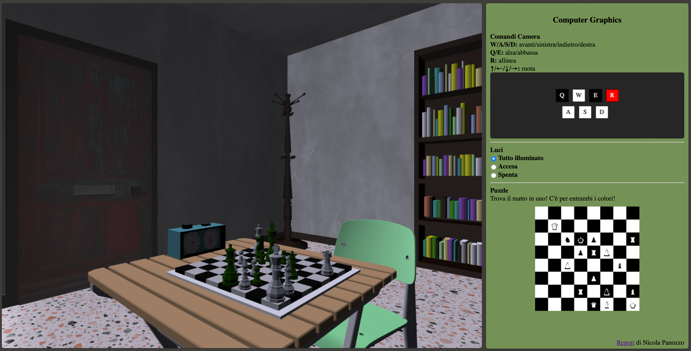
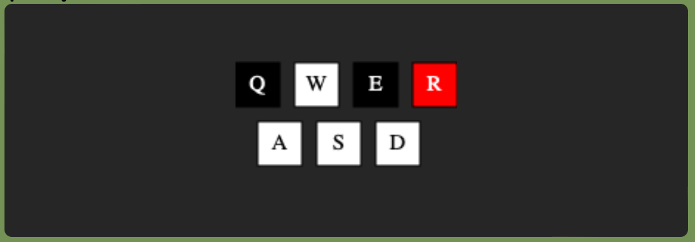

Introduzione
Questo è il progetto di "Computer Graphics A.A. 2022/2023". L'obiettivo è di realizzare un'applicazione 3D interattiva usando WebGL (HTML5, CSS e contesto webgl), linguaggio JavaScript e OpenGL ES SL.La scena rappresentata è una stanza con degli elementi di decoro, nel dettaglio:
- un tavolino: scaricato da qui.
- 2 sedie: scaricate da qui.
- una scacchiera: scaricata da qui. Che rappresenta un quiz che è riportato nella sezione di destra
- dei libri: scaricato da qui. Avendo dei problemi con l'esportazione dei materile di questo asset generativo, ho creato uno script in python per modificare il file .obj ed assegnare materiali differenti.
- un attaccapanni: scaricato da qui.
- una finestra.
- 3 quadri.
- una porta.
- un lampadario.
- un orologio da scacchi: con le lancette che si ruotano.
Tutti i file sono stati esportati in formato .obj e .mtl da Blender.
Interfaccia
L'interfaccia dell'applicazione è composta da due parti:- il canvas per la visualizzazione 3D
- una sezione in 2D contenente:
- le istruzioni testuali per l'utente per interagire con la scena
- un canvas 2d con i controlli cliccabili
- la gestione degli effetti di illuminazione della scena
- un canvas 2d che rappresenta la posizione della scacchiera nella scena contenete un tatticismo di scacchi

I movimenti nella scena possono essere gestiti attraverso:- la tastiera utilizzando i tasti:
- W per andare avanti
- S per andare indietro
- A per andare a sinistra
- D per andare a destra
- Q per andare in alto
- E per andare in basso
- R per impostare la direzione della camera parallela al suolo
- ↑ per ruotare verso l'alto
- ↓ per ruotare verso il basso
- ← per ruotare verso sinistra
- → per ruotare verso destra
- il touch sulla scena testato sul browser Safari
- il canvas 2D in cui sono disegnati i pulsanti per il movimento
- il canvas 2D in cui è stato riportato il tatticismo di scacchi a tema "matto in 1" presente nella scena 3D


Struttura del progetto
All'interno della repository sono presenti i seguenti file:
- doc: è la repository contenente la documentazione del progetto.
- project : è la repository che contiene i file utilizzati per la realizzazione del progetto ed è strutturata nel seguente modo:
- libs: contiene le diverse librerie utilizzate
- obj: è organizzata in sottocartelle contenenti i file dei modelli mesh realizzati. In ogni sottocartella è presente il file .obj che rappresenta la geometria dell'oggetto e il file .mtl che contiene le informazioni delle texture e dei materiali applicati all'oggetto.
- room: è una cartella che contiene tutti i file javascript utilizzati per la realizzazione del progetto.
- style.css: è il foglio di stile utilizzato per la realizzazione dell'interfaccia grafica.
- index.html: è il file principale del progetto, che contiene la struttura HTML e il collegamento a tutti i file javascript e fogli di stile.
- main.js: è il file principale nel quale vengono creati i canvas 3D e 2D, caricati i modelli mesh e sono presenti delle funzioni per la gestione degli eventi.
Room
La directory room contiene i file utilizzati per la realizzazione della scena.I file che lo compongono sono:
- camera.js: si occupa di gestire la camera e i suoi movimenti nello spazio.
- mesh.js: salva i dati relativi ai modelli mesh caricati.
- render.js: gestisce il rendering della scena.
- shandow.js: gestisce le ombre.
- room.js: si occupa di gestire la scena e i suoi oggetti.
Camera
La classe Camera contenuta nel file camera.js si occupa di gestire la camera e i suoi movimenti nello spazio.
L'orientamento della camera è definito da tre assi ortogonali, in cui ogni asse è un vettore in coordinate globali.- position: posizione nello spazio della camera.
- forward: vettore che punta davanti la camera.
- right: vettore che punta alla destra della camera.
- up: vettore che punta verso l'alto.
- rotateUp(step) ruota la telecamera orizzontalmente rispetto alla posizione dell’occhio della telecamera.
Questo movimento si ottiene usando il vettore up. - rotate(step) ruota la telecamera verso l'alto o verso il basso.
Questo tipo di movimento è reso possibile attraverso la rotazione sull'asse right. - moveRight(dist) permette di spostare la telecamera lateralmente senza modificare la direzione della visuale.
Questo tipo di movimento è reso possibile sommando la posizione attuale della camera al prodotto della posizione attuale con la distanza fornita, sull'asse right. - moveUp() Alza o abbassa la telecamera sul suo asse verticale.
Questo tipo di movimento è reso possibile sommando la posizione attuale della camera al prodotto della posizione attuale con la distanza fornita, sull'asse up. - moveForward(d) permette di allontanarsi o avvicinarsi rispetto al punto in cui si sta guardando.
Questo tipo di movimento è reso possibile sommando la posizione attuale della camera al prodotto della posizione attuale con la distanza fornita, sull'asse forward. - reset() permette il riallineamento della telecamera.
- getViewMatrix() restituisce la viewMatrix.
- getPosition() restituisce la posizione della telecamera.
I tasti vengono disegnati dalla funzione makeKeyCanvas. La funzione drawButton si occupa di disegnare i singoli tasti all'interno del canvas 2D, andando a salvare in un array tutti i tasti che si vogliono realizzare.
In seguito, l'array viene iterato tramite la funzione drawAll, che per ogni oggetto dell'array chiama la funzione drawButton. Quest'ultima, si occupa della creazione dei quadrati, che rappresentano i pulsanti, e di determinarne la dimensione, il colore e il testo da applicare.
Vi è anche la funzione makeChessCanvas che si occupa di disegnare la scacchiera all'interno del canvas 2D, data una posizione in formato FEN (Forsyth-Edwards Notation).
mesh.js
Il file mesh.js contiene la classe Mesh che si occupa del carimento degli oggetti.Al suo interno è presente il metodo render(gl, programInfo, uniforms) che disegna l'oggetto utilizzando il programma e le uniform specificate nei parametri. La funzione render globale si occupa di preparare le uniform e i parametri per i rendering per poi andare a disegnare i vari oggetti di scena attraverso la loro funzione di render.
shadows.js
Il file shadows.js si occupa dei dati per la preparazione delle ombre. In particolare:- Compila gli shaders corrispondenti.
- Crea una texture utilizzata come depth map.
- Imposta dei valori utilizzati in fase di rendering.
render.js
Il file render.js contiene una funziona render che si occupa di scegliere uniform e shader a seconda del tipo di rendering scelto.Prima di partire con il rendering la funzione si occupa di effettuare il resize del canvas, se necessario, e controllare gli input da tastiera.
La scena può essere disegnata con due shader, con o senza ombre, e con la possibilità di scegliere tra 2 diversi tipi di illuminazione, tramite la luce del lampadario o quella esterna.
Il rendering base supporta le texture e i colori, la luce diffusa e la specular lightning.
Il rendering base supporta una tecnica avanzata, gli elementi esterni alla scena infatti vengono disegnati con un effetto blur per simulare la vistra attraverso un vetro sporco calcolando il colore di rendering come la media dei colori dei pixel vicini.
Rendering base
Rendering avanzato
La prima techica di rending avanzato è il rendering con ombre, attivabile tramite i radio button per determinare quale luce si vuole: tutto illuminato(niente ombre), accesa (lampadario), spenta (luce esterna).Per poter generare le ombre la scena viene disegnata due volta, prima dal punto di vista della luce per generare una shadowmap, poi dal punto di vista dell’osservatore utilizzando la shadowmap generata per capire se un punto è in ombra o meno. Per potere mantenere luminoso il lampadario, lo si renderizza a senza usare la shadowmap.
Rendering con ombre del lampadario
Nel rendering Spenta la luce entra dalla finestra.Rendering con ombre della finestra
Il vetro della finestra costituisce appunto un elemento trasparente, ottenuto tramite la disabilitazione del depth test e l'attivazione del blending.Trasparenza
Si puo notare l'effetto blur degli elementi fuori dalla finestra quando viene selezionata la modalità Tutto illuminato.Effetto blur
Bonus :)
L'orologio nella scena è animato e le lancette si muovono ancora, perchè il nero, furioso per la sua prestazione mediocre, ha abbandonato la scacchiera e il nero ha vinto.Ma non aveva visto che pure lui aveva matto in uno e poteva vincere la partita.
Orologio
Per realizzare il progetto ho dovuto studiare la storia degli scacchi e le sue regole.Le ricerche hanno portato alla scoperta di reperti significativi, riportati nella scena sotto forma di quadri.
Quadri
Riferimenti
WebGL Fundamentals: Loading .obj with MtlWebGL Fundamentals: Shadows
L'inventore degli scacchi